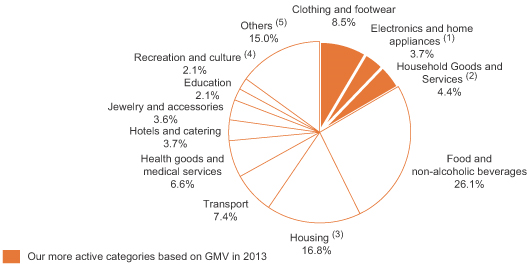

返回主页
Breakdown of consumption in China

(% total consumption expenditure in China, 2013)
Source: Euromonitor International
(1) Electronics and home appliances include audio-visual, photographic and information processing equipment, telecommunications equipment and home appliances.
(2) Household goods and services include furniture and furnishings, carpets and other floor coverings, household textiles, glassware, tableware and household utensils, hardware and household and domestic services.
(3) Housing includes actual rentals for housing, imputed rental for housing, maintenance and repair of dwellings, water and miscellaneous domestic services, electricity, gas and other fuels.
(4) Recreation and culture include recreational and cultural services, other major durables for recreation and culture, package holidays, newspapers, magazines, books and stationery, other recreational items and equipment as well as gardens and pets.
(5) Others include alcoholic beverages and tobacco, telecommunication services, postal services, personal care, social protection, insurance, financial services, durable/semi-durable/non-durable goods and other services.
version:1.0; jobnet@188.com © retter2012.com